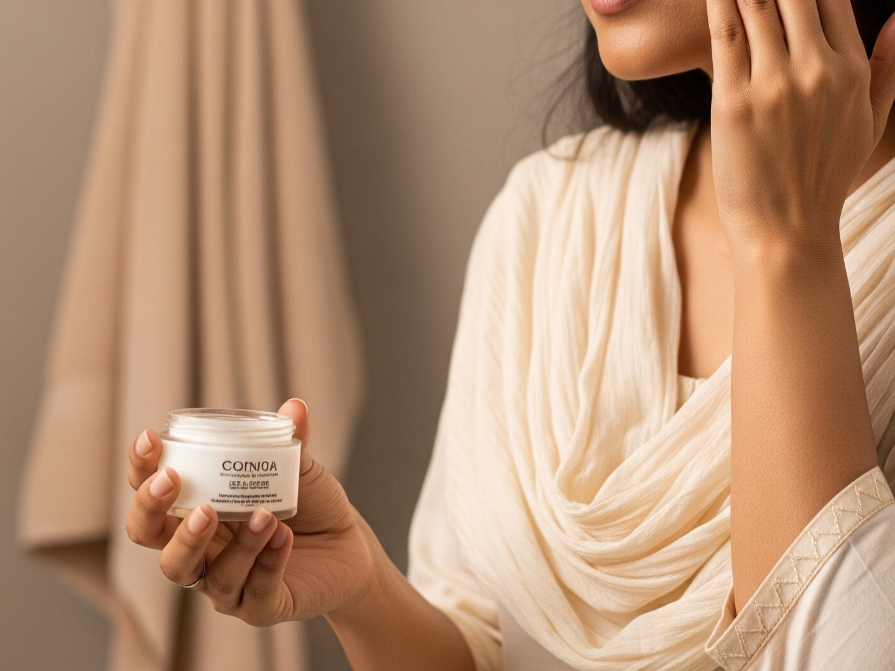

Radiant Bride: Essential Skincare Tips Before Your Wedding
Posted on May 26, 2025 by Smita

Every bride dreams of having that perfect, radiant glow on her wedding day. While makeup can enhance beauty, the true foundation for a flawless bridal look is healthy, well-cared-for skin. Starting a dedicated skincare regimen well before your big day is crucial. Here's a comprehensive timeline and essential tips to help you achieve that coveted bridal luminescence.
Table of Contents
Key Takeaway
Your wedding glow starts long before the big day. The most successful brides begin their skincare journey 6-12 months in advance with a consistent routine tailored to their skin's unique needs. Remember that healthy, radiant skin comes from consistent care, not last-minute miracles.
6-12 Months Before: Laying the Groundwork
Think of this phase as building the foundation for your bridal glow. Starting early gives your skin time to renew and regenerate, addressing deeper concerns that can't be fixed overnight. The earlier you start, the more dramatic and natural your results will be.
- Consult a Professional: Visit a dermatologist or trusted esthetician. They can assess your skin type, identify concerns (acne, pigmentation, dryness, sensitivity), and recommend personalized treatments. This is especially important if you have specific issues like melasma or acne scars that need professional attention.
- Establish a Consistent Routine: Consistency is key for bridal skincare. Your daily routine should include:
- Double Cleansing: Start with an oil-based cleanser to remove makeup and sunscreen, followed by a water-based cleanser to deep clean pores.
- Toning: Use an alcohol-free toner to balance skin pH and prepare for better product absorption.
- Targeted Treatments: Apply serums with active ingredients like vitamin C (brightening), hyaluronic acid (hydration), or retinol (cell turnover).
- Moisturizing: Lock in hydration with a moisturizer suited to your skin type.
- Sunscreen (SPF 30+): Apply generously every morning, reapplying every 2-3 hours when outdoors. This prevents hyperpigmentation and premature aging.
- Address Specific Concerns: Begin treatments for acne, scarring, or pigmentation. Professional options include:
- Chemical peels for texture improvement
- Laser treatments for pigmentation
- Microneedling for scarring
- Prescription retinoids for acne and anti-aging
- Consider Professional Treatments: Schedule monthly facials to deep clean pores and nourish skin. Hydrafacials, oxygen facials, or LED light therapy can significantly improve texture and tone. Start early to gauge your skin's response.
- Lifestyle Foundation: Begin healthy habits:
- Drink at least 8 glasses of water daily
- Reduce sugar and processed foods
- Incorporate skin-friendly foods like berries, nuts, and fatty fish
- Establish a regular sleep schedule
3-6 Months Before: Boosting Your Glow

Now that you've established your foundation, it's time to enhance your radiance. This phase focuses on hydration, protection, and addressing any lingering concerns.
- Hydration is Everything: Increase your water intake to 2-3 liters daily. Incorporate hydrating serums with hyaluronic acid and glycerin. Consider adding a humidifier to your bedroom at night, especially in dry climates.
- Advanced Serums: Based on your skin's needs:
- Vitamin C: Fades dark spots and protects against environmental damage
- Niacinamide: Reduces redness and minimizes pores
- Peptides: Stimulate collagen production for firmer skin
- Alpha Arbutin: Targets stubborn pigmentation
- Professional Treatments: Continue with facials every 4-6 weeks. Consider adding:
- Dermaplaning for smoother makeup application
- Gentle chemical peels for brightening
- Microcurrent therapy for facial contouring
- Healthy Diet & Lifestyle: What you eat reflects on your skin:
- Increase antioxidant-rich foods: berries, dark leafy greens, sweet potatoes
- Include omega-3s: walnuts, chia seeds, salmon
- Reduce dairy and sugar which can trigger breakouts
- Manage stress through yoga, meditation, or regular walks
- Prioritize 7-8 hours of quality sleep nightly
- Patch Test New Products: Always test new products on your jawline for 3-5 days before full application. Introduce only one new product at a time to identify any reactions.
Bridal Skincare Tip
When trying new products, follow the "one-in, one-out" rule. Introduce only one new product every 2-3 weeks. This helps you identify what works for your skin and prevents reactions that could set back your progress.
1 Month Before: The Final Polish
You're in the home stretch! This phase is about maintenance and avoiding any skin disasters. The focus shifts to preserving your progress rather than making major changes.
- Final Professional Facial: Schedule your last intensive facial 2-4 weeks before the wedding. Opt for a hydrating or calming facial rather than anything aggressive. Avoid extractions that might leave temporary redness.
- Stability is Key: Freeze your skincare routine. Now is NOT the time to experiment with new products, treatments, or DIY remedies. Stick with what you know works for your skin.
- Hydration Boost: Increase your water intake to 3 liters daily. Add hydrating sheet masks 2-3 times weekly. Consider taking hyaluronic acid supplements after consulting with your doctor.
- Lip Care Routine:
- Gently exfoliate lips 2-3 times weekly with a sugar scrub
- Apply a thick layer of nourishing lip balm nightly
- Avoid matte lipsticks that can cause dryness
- Body Care: Don't neglect your body:
- Dry brush before showers to stimulate circulation
- Moisturize daily with a rich body cream
- Pay special attention to elbows, knees, and heels
1 Week Before: Gentle Care & Relaxation
With just days to go, your priority is maintaining calm and avoiding last-minute skin emergencies. This is when brides often make regrettable skincare decisions!
- Gentle Exfoliation: Use a mild enzymatic exfoliator once or twice to remove dead skin cells. Avoid physical scrubs which can cause micro-tears. If using acids, choose low concentrations of lactic or mandelic acid.
- Soothing Masks: Use calming sheet masks with ingredients like aloe, centella asiatica, or oatmeal. Avoid anything with strong actives like retinols or high-percentage acids.
- Sleep Rituals: Prioritize 8 hours of quality sleep nightly. Create a bedtime routine:
- Dim lights 1 hour before bed
- Use lavender essential oil for relaxation
- Invest in a silk pillowcase to prevent sleep creases
- Stress Management: Wedding planning stress can trigger breakouts. Practice:
- 10-minute meditation sessions morning and evening
- Delegate tasks to family and friends
- Schedule relaxing activities like a massage or gentle yoga
- Emergency Kit: Prepare for any last-minute skin issues:
- Hydrocolloid patches for pimples
- Cooling eye masks for puffiness
- Aloe vera gel for any irritation
The Final Days & Wedding Day
Your wedding day is almost here! Follow these final tips to ensure perfect skin when it matters most.
- Two Days Before:
- Get your final eyebrow shaping (if needed)
- Apply a hydrating overnight mask
- Avoid salty foods that cause puffiness
- The Day Before:
- Cleanse gently and apply a light moisturizer
- No new products or treatments!
- Drink plenty of water but reduce intake after 7 PM
- Get to bed early with electronics turned off
- Wedding Morning:
- Cleanse with lukewarm water
- Apply a simple moisturizer and lip balm
- Use a jade roller or cold spoon to depuff eyes
- Stay calm and trust your makeup artist
- Resist Picking: If a blemish appears, don't touch it! Your makeup artist can expertly conceal any imperfections. Picking will only make it worse and potentially cause scarring.
- Nutrition: Eat a light, balanced meal before ceremonies. Include complex carbs and protein for sustained energy. Avoid foods that might cause bloating or indigestion.
Special Considerations for Indian Brides
Indian bridal traditions require special skincare considerations:
- Mehndi Preparation: Exfoliate hands and feet 2 days before mehndi application for better stain. Avoid oils on application areas as they can block dye absorption.
- Gold Jewelry Compatibility: Some skincare ingredients (like acids) can react with gold jewelry. Switch to gentle products 3 days before wearing heirloom pieces.
- Multiple Event Glow: For weddings spanning several days:
- Schedule facial appointments between events
- Use overnight recovery masks after each function
- Keep makeup removal gentle to avoid irritation
- Traditional Remedies: While grandma's haldi ceremony is wonderful, do a patch test 2 weeks prior if using homemade ubtans. Some ingredients can cause reactions on sensitized skin.
- Climatic Considerations: Adjust routines for seasonal weddings:
- Summer: Lighter textures, oil-control products
- Winter: Richer creams, added hydration
- Monsoon: Antifungal precautions, quick-dry formulas
Common Skincare Mistakes to Avoid
Steer clear of these bridal skincare pitfalls:
- Over-Exfoliating: Scrubbing too hard or too often damages your skin barrier, causing redness and sensitivity.
- Product Overload: Using too many active ingredients simultaneously can cause irritation and breakouts.
- Ignoring Neck and Décolletage: These areas show in bridal wear but often get neglected in routines.
- Skipping Professional Guidance: DIY approaches often fail to address specific concerns effectively.
- Last-Minute Experiments: Trying new treatments or products in the final month risks disasters.
- Neglecting Body Skin: Arms, back, and shoulders need attention too, especially for traditional bridal wear.
- Forgetting SPF: Sun damage is cumulative and can undo months of careful work.
Your Radiant Journey
Achieving that beautiful bridal glow is a journey, not an overnight miracle. By investing in a consistent skincare routine and healthy habits, you'll not only look radiant on your wedding day but also enjoy the long-term benefits of healthy skin. Remember that your natural beauty is what truly shines through on your special day.
Your wedding is a celebration of love, and your skin should reflect the joy and health you feel inside. With proper planning and care, you'll walk down the aisle glowing with confidence and radiance that comes from well-nurtured skin.
Need personalized skincare advice or pre-bridal beauty services? Schedule a consultation at Smita's Glam World to begin your journey to radiant bridal skin. Our expert team specializes in creating customized pre-wedding beauty plans that address your unique skin concerns while honoring your cultural traditions.